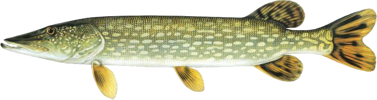

Binds model values to Swing components using the observable pattern and Java reflection.
1. Concepts
This section introduces some concepts needed to describe the design pattern. The concept descriptions are rather abstract, see the Example section for a concrete example.
1.1. Model
A model object represents an entity of the application domain. It has a set of aspects (see below). Model objects are observable. This means that other objects (not necessarily model objects) can register themselves as listeners. Listeners are notified when the state of the model object changes. The most common model object state change is the change of an aspect value.
1.2. Aspect
A model object has a set of aspects. For each aspect the model object has methods for accessing (getting and/or setting) the aspect value. Normally an aspect has both get and set methods but read-only and write-only aspects are conceivable.
1.3. Submodel
Given a model object A, the value of one of its aspects can be another model object B. In this case B is said to be a submodel of A. B can be a submodel of many other model objects so no unambiguous super model relation exists.
1.4. Aspect projector
Aspect projectors are swing objects used for displaying and/or manipulating aspect values. Examples of such objects are instances of the classes JTextField, JComboBox, JCheckBox and JProgressBar.
1.5. Model owner
A model owner has a reference to a model object. The value of this reference is observable. This means that other objects can register themselves as listeners. Listeners are notified when the value of the reference changes.
1.6. Aspect adapter
An aspect adapter connects an aspect with an aspect projector. Its task is to keep the aspect value synchronized with the value displayed in the aspect projector. The aspect adapter is also responsible for all conversion between aspect values and projected values.
2. Putting it all together
When created, an aspect adapter is given a reference to the aspect projector and a reference to a model owner. It also maintains a reference to a model object. The purpose of reference the aspect projector is obvious. It makes it possible to access the projected value (the value displayed to the user) and to monitor user input. The model object reference serves a similar purpose. It makes it possible to access and monitor the aspect.
In many cases, a reference to the model is not available when the aspect adapter is created. Another common scenario is a model owner which changes models during the lifespan of an aspect adapter. The aspect adapter must therefore observe the model owner in order to maintain a reference to the actual model.
Aspect value and the projected value synchronization is achieved by monitoring both aspect value changes and user input. When user input occurs, the projected value is propagated from the aspect projector to the model. When the aspect value changes, it is propagated from the model to the aspect projector. All necessary value conversions are performed by the aspect adapter.
3. Submodels and model owners
A special case that warrants further description is the relations between models, submodels and model owners. Normally, a model-submodel pair is handled by a pair of model owners. A submodel adapter (which is actually a kind of read-only aspect adapter) assures that the two model owners stay synchronized. Synchronized in this case means that the (sub)model owner refers to the submodel of the model being referred to by the model owner. In the diagram below, the relations that are synchronized by the submodel adapter are represented by the thick arrows.
The diagram below illustrates the submodel owner synchronization behaviour. The first two scenarios describe what happens when the model property of the model owner is changed. The last scenario describe s what happens when the submodel aspect of the model is changed. Note that the submodel adapter does not monitor the model property of the submodel owner. If it is changed by a call from another object (not the submodel owner) then the synchronization breaks.
4. Example
To illustrate the concepts introduced in the previous chapter we’ll use a very simple example. The model is implemented by the class Person which has the aspect name. The model owner is implemented by the class PersonPanel. PersonPanel is a descendant of the swing class JPanel. It contains an aspect projector which is an instance of the swing class JTextField. The class TextFieldAdapter implements the aspect adapter. The figures in this chapter correspond to the figures in the previous chapter.
5. Code example
5.1. The model class
public class Person extends nu.esox.util.Observable
{
private String m_name;
public person( String name )
{
m_name = name;
}
public String getName() { return m_name; }
public void setName( String name )
{
if ( name.equals( m_name ) ) return;
m_name = name;
fireValueChanged( "name", m_name ); // aspect name, aspect value
}
}The class nu.esox.util.Observable implements the capability of maintaining a set of observers. It also
supplies a method
(fireValueChanged) for notifying the listeners but it is the responsibility of the subclass to call this
method (as in setName).
5.2. The model owner class
public class PersonPanel extends nu.esox.gui.ModelPanel
{
public PersonPanel()
{
super( new GridLayout( 0, 2 ) );
add( new JLabel( "name" ) );
javax.swing.JTextField tf = new javax.swing.JTextField( 20 );
add( tf );
new nu.esox.gui.aspect.TextFieldAdapter(
tf, // aspect projector
this, // model owner
Person.class, // model class
"getName", // name of method used to get aspect value
"setName", // name of method used to set method value
String.class, // aspect value class
"name" ); // aspect name
}
public void main( String [] args )
{
PersonPanel pp1 = new PersonPanel();
PersonPanel pp2 = new PersonPanel();
javax.swing.JFrame f = new javax.swing.JFrame();
f.add( pp1 );
f.pack();
f.show();
f = new javax.swing.JFrame();
f.add( pp2 );
f.pack();
f.show();
Person p = new Person( "John Doe" );
pp1.setModel( p );
pp2.setModel( p );
}
}The class nu.esox.gui.ModelPanel is a subclass of JPanel that implements the interface of a model owner.
There is no need to keep a reference to the text field outside the constructor. The instance of
nu.esox.gui.aspect.TextFieldAdapter handles this reference. Note that the validity of the method names
supplied to the
constructor of nu.esox.gui.aspect.TextFieldAdapter is verified at run time not at compile time.
Since both person panels have the same person as model one will be updated when a name value is entered
into the other.
This illustrates the aspect value synchronization behavior of aspect adapters.
6. Supporting classes
This section briefly describes some of the supporting classes. For the details see the source code.
6.1. Observable model
All classes that support the observable model design pattern are found in the package nu.esox.util.
6.1.1. nu.esox.util.ObservableIF
This interface defines the protocol of an observable model object.
6.1.2. nu.esox.util.Observable
This class implements ObservableIF. Normally, the simplest way to implement an observable model is
to inherit
nu.esox.util.Observable and call the method fireValueChanged when appropriate. For cases when inheriting
nu.esox.util.Observable isn’t an option see the class ObservableImpl.
6.1.3. nu.esox.util.ObservableListener
This interface defines the protocol of an observer.
6.1.4. nu.esox.util.ObservableEvent
This class and its subclasses are used to carry a notification from an observable model object to its
observers. The subclass
ObservableTransactionEvent carries multiple notifications that make up a transaction.
6.1.5. nu.esox.util.ObservableImpl
This class is useful when the class one wants to make observable already has a super class (making it
impossible to inherit the class Observable). Instructions are found in the source code file.
6.1.6. nu.esox.util.ObservableCollection and nu.esox.util.ObservableList
These classes are used to wrap collection objects making them observable. Associated with them are
subclasses of ObservableEvent that carry collection specific notification information.
6.2. Projected aspect
6.2.1. nu.esox.gui.aspect.ModelOwnerIF
This interface defines the protocol of a model owner. It also contains an interface that defines the protocol of a model owner observer.
6.2.2. nu.esox.gui.ModelPanel
This class inherits the swing class JPanel and implements ModelOwnerIF. The result is a swing panel that
can act as a model owner for its aspect projecting children (in the swing component hierarchy).
6.2.3. nu.esox.gui.ModelFrame and nu.esox.gui.ModelDialog
These classes do for JFrame and JDialog what ModelPanel does for JPanel.
6.2.4. nu.esox.gui.aspect.DefaultModelOwner
This is an implementation of ModelOwnerIF. It implements model owner behavior but nothing else. Normally
the classes
ModelPanel, ModelDialog and ModelFrame are more useful but there are some special cases when
DefaultModelOwner is the correct choice.
6.2.5. nu.esox.gui.aspect.SimpleModelOwner
This is an implementation of ModelOwnerIF for which the model value can not be changed. It is useful when
a reference to the model object is available but there is no natural model owner.
6.2.6. nu.esox.gui.aspect.AbstractAdapter
This is the super class of all aspect adapter classes. It implements all aspect adapter behavior except that which is specific to the aspect projector type.
6.3. Concrete aspect adapters
The package nu.esox.gui.aspect contains aspect adapters for most swing components. A few examples are
TextFieldAdapter, ComboBoxAdapter, SpinnerAdapter and LabelTextAdapter.
6.3.1. SubModelAdapter
This class implements the submodel adapter behavior described in section.
